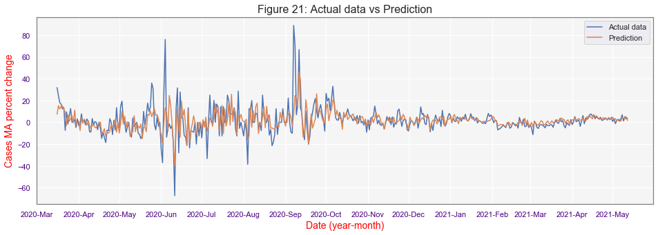

Malaysia Covid-19 data
Cumulative Covid-19 Cases in Malaysia (click and drag to filter by date)
Covid-19 Data
| Date | Cases | Discharged | Deaths | ICU |
|---|
Forecast
Daily Covid-19 cases forecast from Feb 02 2021 - Mar 31 2021 (click and drag to filter by date)
Total Cases:
Analysis
The Covid-19 daily cases are averaged for 7 days to smoothen the day-to-day fluctuations. The resulting graph is shown in Figure 1.

To convert the data into a stationary time series, differencing approach is applied on the daily cases values. Next, Dicky-Fuller test was carried out to confirm the new transformed data stastifiy stationarity condition. The resulting calculation (see below) shows the level of significance is close to 0, confirming stationarity.

ACF and PACF graph are plotted as shown in Figure 2 and Figure 3 to determine the number of lags to be considered in auto regression moving average (ARMA) model.

For the ACF (Figure 2), lags until day 12 shows values above significance level. While for the PACF (Figure 3), lags until day 14 shows values above significance level.
ARMA model with lags up to 7 days for AR and MA are tested. In total 114 different models were simulated and only 10 models show result where all coefficients are above 5% siginficance level. The Log Likelihood and AIC for these models are summarised in the Table 1 below.
Table 1: Log Likelihood and AIC values for different| ARMA Model | Log Likelihood | AIC |
|---|---|---|
| (0,1) | -1583.218 | 3172.435 |
| (1,1) | -1571.061 | 3150.122 |
| (1,0) | -1581.767 | 3169.534 |
| (2,0) | -1579.113 | 3166.226 |
| (3,3) | -1567.122 | 3150.244 |
| (4,2) | -1563.218 | 3142.436 |
| (4,6) | -1549.791 | 3123.582 |
| (7,4) | -1538.022 | 3102.044 |
| (1,9) | -1531.411 | 3086.822 |
| (8,9) | -1527.545 | 3093.090 |
From Table 1, ARMA model 8,9 and 1,9 have the lowest Log likelihood and AIC values compared to the rest of the models. Log likelihood ratio test between these two models proved that model 1,9 was better and thus this model residual will be examined further to determine whether it is a good fit. First, the Dicky-Fuller test show the significance level of the residual is close to 0, thus it is stationary.

Second, the residual values are checked for autocorrelation as shown Figure 4. All lags show ACF values below significance level apart from lags 10 and 12 . However, since this are far down the line, the model prediction is expected not to be affected significantlly.
The residuals are plotted to check whether it resemble white noice as shown in Figure 5. As seen from the figure, there is no clear pattern exist, thus the residuals represent white noise. However, it can be noticed that there were large peaks at the begining, in June and in September 2020 due the model inability to adapt to large changes quickly.
Figure 6 shows how the model fits against the data. The red line represents the predictions, while the blue line represents the actual data
